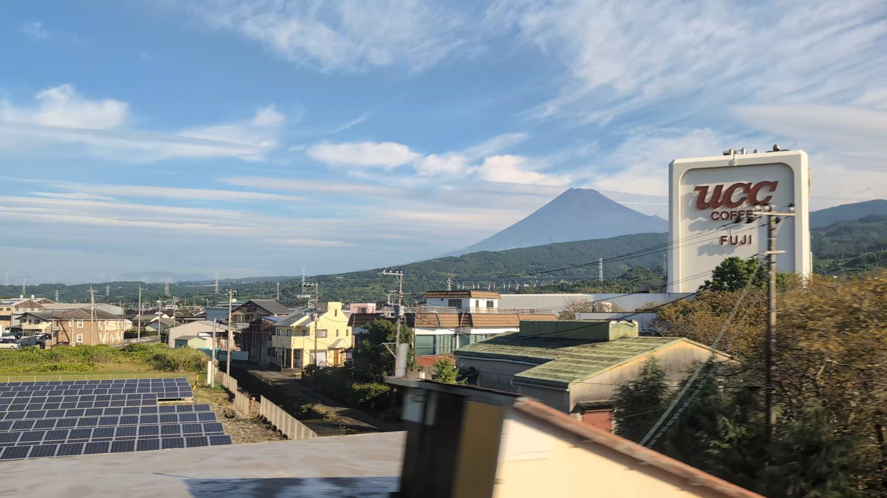
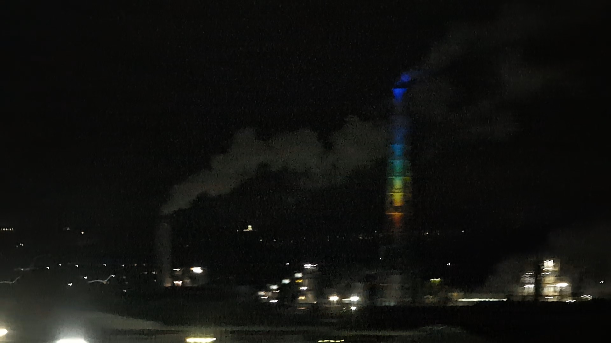
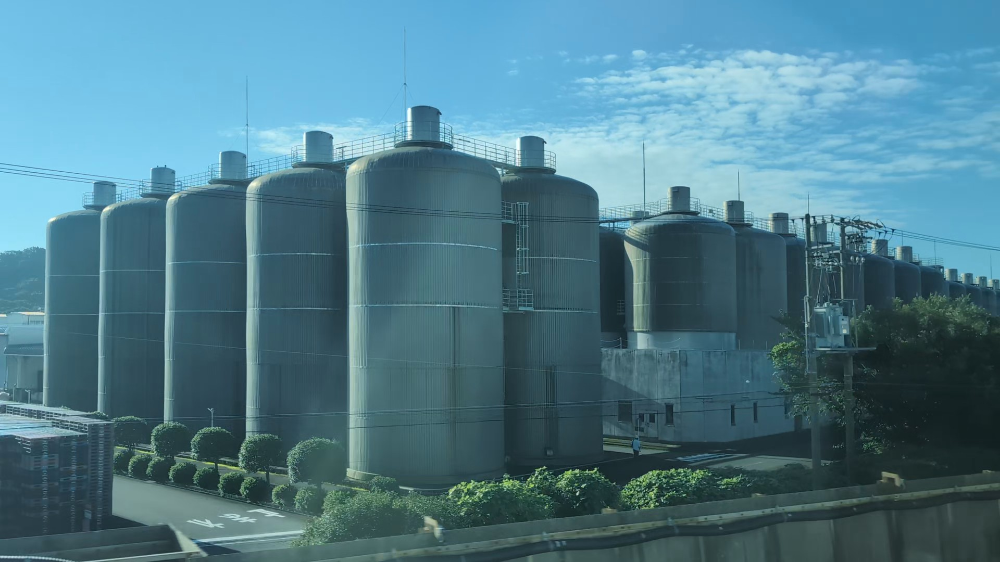
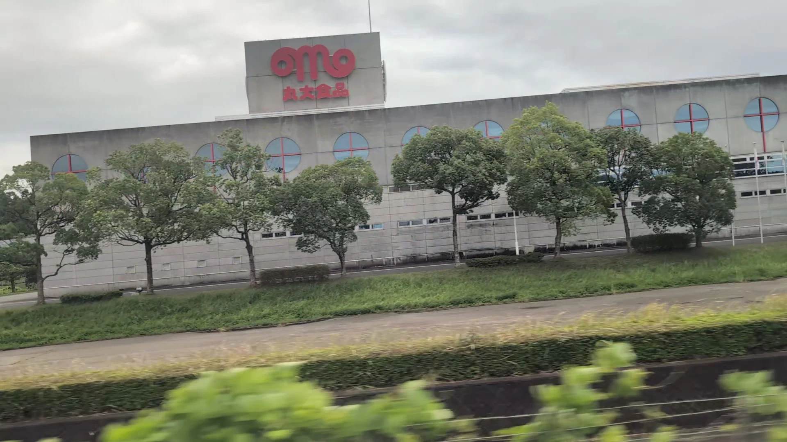
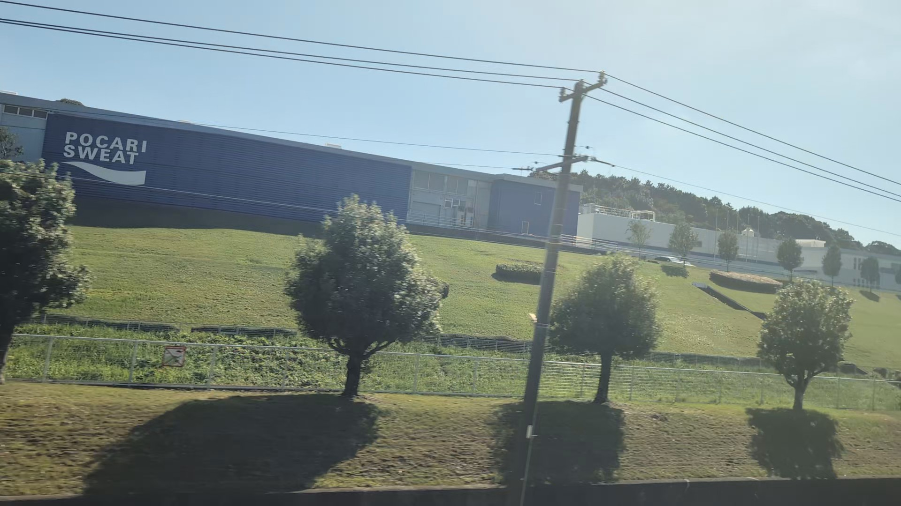
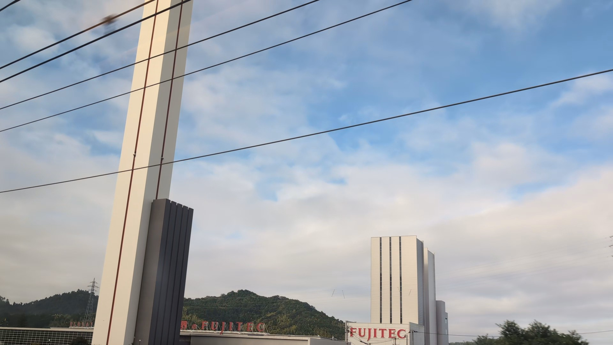
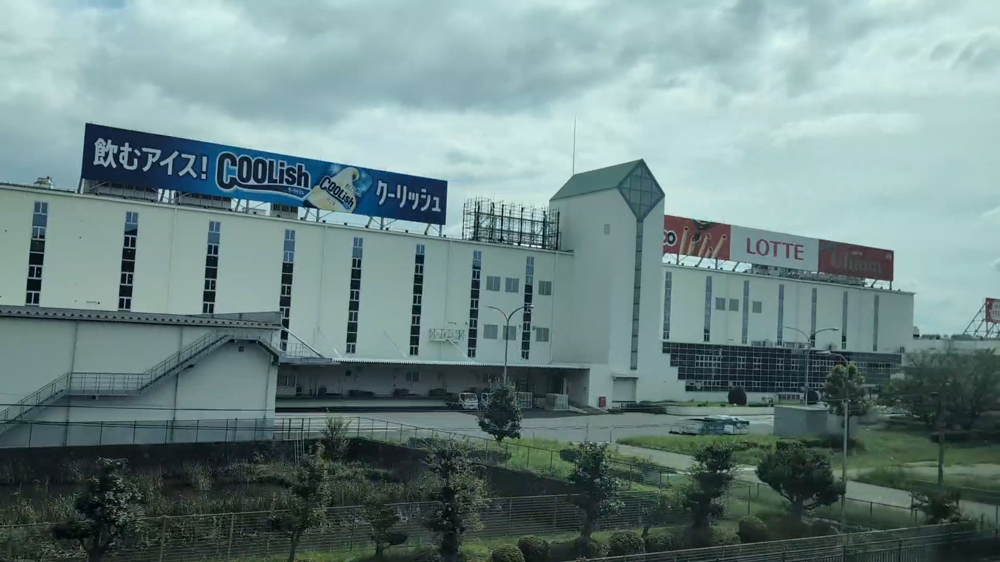
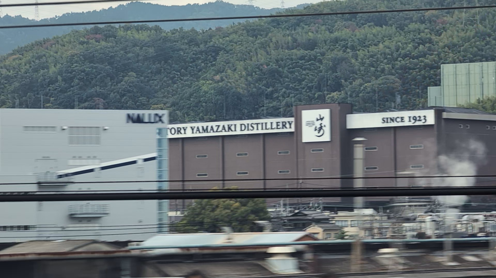

Côté EÀ droite dans le sens de la marche UCC, usine de Fuji
Une tour de café devant le mont Fuji
Cherchez « UCC COFFEE FUJI » sur la tour blanche. Le mont Fuji se dresse derrière cette usine de café torréfié.
Shinkansen Tokaido · Tokyo–Shin-Osaka
Café, confiseries, cosmétiques. Le long des voies se trouvent les lieux où naissent les produits du quotidien.
Repérer sur les photos Lieux : 26↓
Mishima → Shin-Fuji

Une tour de café devant le mont Fuji
Cherchez « UCC COFFEE FUJI » sur la tour blanche. Le mont Fuji se dresse derrière cette usine de café torréfié.

Le papier du quotidien au pied du Fuji
Les cheminées rouges et blanches devant le mont Fuji servent de repère. Dans cette enceinte, l'usine Shin-Fuji de Crecia-Kasuga fabrique du papier à usage domestique, notamment du papier toilette.

Un arc-en-ciel au-dessus de l'usine
Cette usine fabrique notamment du papier destiné au carton ondulé. L'éclairage arc-en-ciel de la photo correspond à une animation limitée au 11–23 novembre 2026 : ce n'est pas une vue habituelle.
Shizuoka → Kakegawa

La bière de Shizuoka vient de Yaizu
Repérez les rangées de cuves argentées et l'emblème en étoile. La Shizuoka Bakushu, une bière vendue uniquement à Shizuoka, sort elle aussi de cette brasserie de Yaizu.

Le « +S » d'un sachet de kamaboko
L'emblème de Kibun dépasse d'une succession de toits rouges. L'usine fabrique des kamaboko et des chikuwa, préparations à base de poisson. Le code de fabrication « +S » sur leurs emballages désigne ce site.
Près du pont ferroviaire sur l'Oi. Les bâtiments d'Ajinomoto se trouvent de l'autre côté du train.

Des noms de café au-delà de la rivière
Quand le large lit de la rivière apparaît, regardez au pied des collines. L'usine de Shimada produit du café et utilise aussi le marc après extraction pour alimenter ses chaudières.
Regardez vers l'amont depuis le pont sur l'Oi. L'usine se trouve à environ 1,3 km des voies.

Du riz en bouillie et du pain à cuire
Le nom Knorr se lit sur un mur blanc arrondi. À cette adresse se trouvent l'usine de Shizuoka d'Ajinomoto Food Manufacturing, qui produit des bouillies de riz, et le site de Shimada d'Ajinomoto Bakery, qui fabrique de la pâte à pain surgelée.
Près du pont ferroviaire sur l'Oi, du côté opposé à la tour de Kibun au marquage rouge.
La photo permet d'identifier l'extérieur du site. La correspondance entre les bâtiments et les différentes lignes de production n'est pas confirmée.
Kakegawa → Hamamatsu

Le maquillage sous un grand toit blanc
Un vaste toit blanc longe les voies. L'usine fabrique du maquillage ; ce toit protège les produits lors de leur expédition contre le vent, la pluie et le soleil.

Le « +P » qui mène à Kakegawa
L'emblème rouge de Marudai Food domine les arbres, au-dessus de fenêtres rondes. En 2023, l'entreprise a présenté de longues saucisses de type viennois fabriquées ici. Le code du site sur les emballages est « +P ».
À environ 4 km de la gare de Kakegawa vers Hamamatsu. Vers Shin-Osaka, après Shiseido.

Votre train se reflète dans la vitre
Observez la longue façade vitrée de cette usine de cosmétiques. Si la lumière s'y prête, vous y verrez le reflet du Shinkansen dans lequel vous voyagez.

Le bleu de Pocari Sweat
Au-delà d'une pelouse verte, un grand mur bleu POCARI SWEAT attire le regard. Il permet de repérer cette usine de boissons, dont Pocari Sweat.

Des boîtes pour protéger l'électricité
Cherchez NITO et le nom japonais de Nitto Kogyo sur le mur blanc. Les petits coffrets fabriqués ici abritent et protègent des équipements électriques.

L'emblème se retrouve au jardin
Suivez les vagues jaunes et orange sur le mur blanc : un grand emblème apparaît aussi dans le jardin. L'usine fabrique notamment des couches pour bébés et adultes, des protections périodiques et des lingettes de nettoyage.
À environ 4 km de la gare de Kakegawa vers Hamamatsu. Vers Shin-Osaka, après Nitto Kogyo.

Du curry aux petits en-cas
Cherchez la tour au nom de House Foods. Cette usine de Fukuroi fabrique le Vermont Curry, le Hokkaido Stew et les en-cas Tongari Corn.

Des rails aux mers du monde
Repérez les lettres rouges YAMAHA et les ailettes verticales blanches. Ici sont fabriqués des moteurs hors-bord, fixés à l'arrière des bateaux.

Du feutre des chapeaux aux pointes de stylo
L'enseigne verte TEIBOW marque le siège et l'usine d'une entreprise passée du travail du feutre pour chapeaux à la fabrication de pointes de stylo.
La répartition actuelle des différents types de produits fabriqués dans cette usine n'est pas confirmée.
Hamamatsu → Toyohashi

Un S rouge au-dessus des toits
Le S rouge des voitures Suzuki apparaît au-dessus des maisons. Il s'agit du siège de l'entreprise. La fabrication des moteurs de moto, autrefois installée à Takatsuka, a été transférée en 2018 à Miyakoda, à Hamamatsu.
Près de la gare JR de Takatsuka, entre la gare de Hamamatsu et le lac Hamana. Avant le lac vers Shin-Osaka ; après le lac vers Tokyo.

Transporter le silicium avec soin
Au-delà de la pelouse, le long mur porte « usine de Toyohashi » et « fondée en 1917 ». Ce site majeur fabrique des équipements qui déplacent de fines tranches de silicium en préservant leur propreté, lors de la fabrication des puces des smartphones et d'autres appareils.
À Miya-cho, Toyohashi, du côté de Tokyo par rapport à la gare de Futagawa. Avant Toyohashi vers Shin-Osaka ; après le départ de Toyohashi vers Tokyo.
Le même nom d'entreprise est visible à environ 800 m au sud de la gare de Nagoya. Il s'agit là d'une publicité d'environ 70 m sur le mur du centre commercial Market Square Sasashima.

Mikawa-Anjo → Nagoya

Le pain du matin, au bord des voies
Un soleil et le nom rouge de Yamazaki surgissent tout près du train. Cette usine voisine de Mikawa-Anjo fabrique du pain et des douceurs japonaises et occidentales.

Une enseigne connue, un rôle qui évolue
Repérez l'enseigne Cellotape rouge, blanche et bleue. Cette usine de rubans adhésifs a aussi élargi son rôle à des produits destinés aux soins médicaux.
Les informations sur les installations de 2026 mentionnent des rubans adhésifs à usage médical ainsi que des rubans en papier et en plastique. Selon une explication officielle de 2025, la production liée à Cellotape a été regroupée à Saitama. L'enseigne seule ne permet donc pas d'affirmer que Cellotape est actuellement fabriqué à Anjo.
Nagoya → Gifu-Hashima
Des cuves comme des bières géantes
Les cuves peintes en argent et en or s'alignent. Après Nagoya en direction de Shin-Osaka, repérez cette brasserie de Kiyosu qui produit la Kirin Ichiban.
Maibara → Kyoto

Une grande horloge après Maibara
Un long bâtiment affiche YANMAR en rouge et une grande horloge. Ce centre de recherche de Maibara travaille sur l'amélioration de la consommation des moteurs et les énergies alternatives.
Juste après Maibara vers Shin-Osaka : un récit en Kodama situe la vue à environ une minute du départ. Vers Tokyo, avant l'arrivée à Maibara.

Là où commencent les montées et descentes
La haute tour sert à la recherche sur les ascenseurs. Sur le même site, des usines produisent des modèles standards et sur mesure : recherche et fabrication se côtoient.

Les friandises s'affichent en grand
De grandes enseignes présentent confiseries et glaces. L'usine fabrique notamment les mochis glacés Yukimi Daifuku, les glaces Coolish et les biscuits Toppo. Tous les produits représentés sur les panneaux ne sont pas fabriqués ici.

Le riz instantané vient aussi d'ici
À Ritto, cherchez le bâtiment Nissin Foods. Il produit aussi des repas de riz instantané en pot, comme Curry Meshi. Il est distinct de l'usine du Kansai située de l'autre côté des voies, côté E.
Kyoto → Shin-Osaka

Le whisky au pied des collines
Derrière les toits des maisons et les fils électriques, cherchez le nom Yamazaki. Cette distillerie produit le whisky de malt entrant dans le single malt Yamazaki.
A et E désignent les places côté fenêtre des voitures ordinaires à cinq sièges par rangée (3+2). Vers Shin-Osaka, A est à gauche et E à droite ; vers Tokyo, A est à droite et E à gauche. En Green Car, la fenêtre D correspond au côté E des voitures ordinaires. Les lettres restent du même côté de la ligne ; seule la gauche ou la droite dans le sens de la marche change.
Le rôle et les productions de chaque site ont été vérifiés en novembre 2026 dans des documents propres à l'établissement, notamment ceux des entreprises. Un produit affiché sur une façade n'est pas forcément fabriqué sur place. Le guide présente aussi le siège de Suzuki sur l'ancien site industriel de Takatsuka et le centre de recherche de Yanmar. Les lieux sont regroupés par tronçon entre gares, sans ordre de passage strict à l'intérieur d'un même tronçon. Les distances sont approximatives ; la vitesse du train et la lumière modifient la vue. La mention « en japonais » indique la langue de la source.
Photos depuis le train : michikusa. Décoration du train visible sur la photo de POLA : © Disney.
栗原景『東海道新幹線の車窓は、こんなに面白い！』 — Toyo Keizai, 2016 (édition originale japonaise)